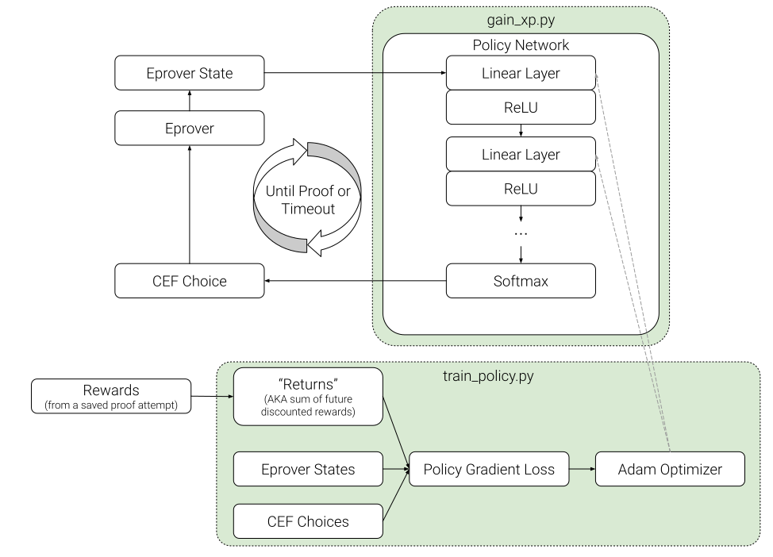

Reinforcement learning in E
Jack McKeown
(mckeown@cs.miami.edu)
(advised by Geoff Sutcliffe
(geoff@cs.miami.edu)
)
Outline
Previous work in Reinforcement Learning (RL) for ATP
Incorporation of RL into Eprover
Results
Future directions
Previous work in RL for ATP
Incorporation of RL into Eprover
RL in relation to E's Automatic Mode
E's "--auto" mode
:
features of a problem
$\rightarrow$
heuristic
Our RL idea
:
state of E
$\rightarrow$
probabilistic heuristic
Usual RL idea
:
state of E
$\rightarrow$
given clause
Example heuristic in E's --auto mode: 10 * Clauseweight(PreferGoals,1,1,1), 10 * Clauseweight(PreferNonGoals,1,1,1), 10 * Clauseweight(ByHornDist,1,1,1), 1 * FIFOWeight(ConstPrio)
Example heuristic in RL mode: 0.5 * Clauseweight(PreferGoals,1,1,1), 0.2 * Clauseweight(PreferNonGoals,1,1,1), 0.1 * Clauseweight(ByHornDist,1,1,1), 0.1 * FIFOWeight(ConstPrio), ...
Other choices to make
What are the states, actions, and rewards?
Monte Carlo Tree Search?
Which RL algorithm to use?
Reward shaping?
Optimal policy is preserved when
$r := r + \lambda f(s') - f(s)$
Problem sampling
Oversample hard problems? (More meaningful reward signal)
Oversample easy problems? (Faster training)
The choices we made
What are the states, actions, and rewards?
state:
length and average weight of processed and unprocessed sets
actions:
choice from a static set of 75 clause evaluation functions (extracted from those used in --auto)
rewards:
1 if proof found else 0
Monte Carlo Tree Search? -
not yet
Which RL algorithm to use? -
vanilla policy gradients
Reward shaping? -
none
Problem sampling -
uniform

Dataset
MPTPTP2078 - extracted from Mizar
Bushy variants of problems
60 soft seconds given for timeout
Results
RL Policy
Problems
Percentage
Uniform Distribution
1105
53.2%
Learned Distribution
1105
53.2%
Neural Network Policy
1110
53.4%
E --auto
1156
55.6%
Future Directions
More robust state space
Add Monte Carlo Tree Search (MCTS)
Inspirations from TRAIL
Incorporate problem difficulty into rewards
Retaining the awesomeness of E's
--auto
mode
Thanks for listening
Questions?
Suggestions / Advice?